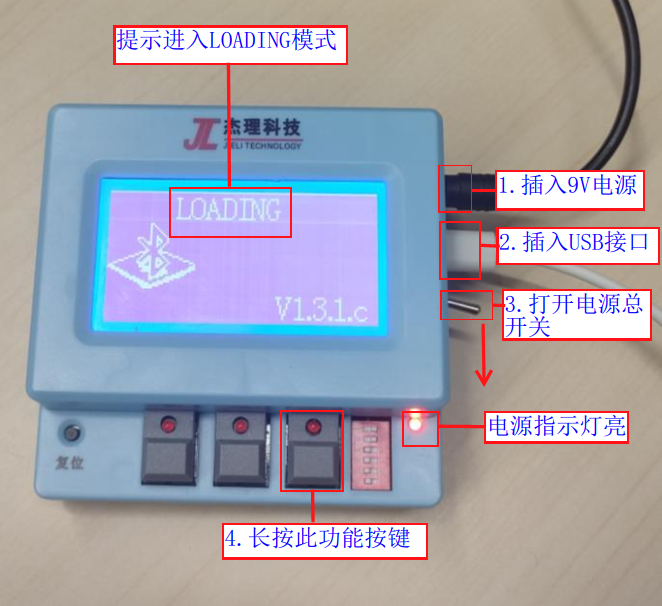
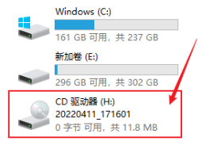
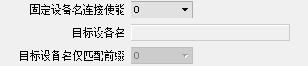
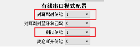

3.2. 上位机功能配置和使用
3.2.1. 打开并使用上位机
测试盒上电开机，插入USB数据线连接PC电脑，使测试盒进入
LOADING模式， 如测试盒进入 LOADING 模式图所示
【1】使用9V电源适配器给测试盒供电【2】插入pc从机线
【3】控制总电源的钮子开关拨到
ON【4】
**长按**测试盒最右边功能按键进入LOADING模式，即PC模式

测试盒进入 LOADING 模式
打开我的电脑，看到如下CD驱动器，单击进入

打开CD驱动后会弹出下图，然后再双击打开bt_test_box.exe，
也可以把这个工具和文档拷贝到pc电脑去操作。
弹出下面窗口，【1】先点击从测试盒读取设置，【2】然后配置好点击保存到测试盒，拔出pc从机线即可

用户经常修改修改如下3项，
可搜索最小信号强度，可调整搜索样机距离，数字越小范围越广。
也可以设置待测样机名字让测试盒只连接待测样机使测试速度尽量快，
修改测试最大功率修改，有些样机需要把功率调低才好连。
3.2.2. 常见功能设置
1、主机MAC地址：本测试盒的蓝牙地址
2、目标MAC地址：固定地址连接模式下，被测试蓝牙设备的地址
3、升级电量门限：样机电量低于设定百分比是不进行样机升级
4、固定地址连接使能：使能后蓝牙以固定地址链接
5、固定设备名连接使能：使能后蓝牙以固定名字链接
6、目标设备名仅匹配前缀：使能后支持匹配前缀名相同而后缀名不同的蓝牙设备
7、频偏自动校正使能，通过测试频偏后自动调整小机频偏
8、搜索最大功率设置
9、搜索最大灵敏度设置
10、可搜索最小信号强度(单位db),控制搜索附近样机距离
11、测试最大功率设置
12、最大频偏提醒，测试的样机的频偏值如果大于此值，测试盒的喇叭会报警
13、频率校正，校正的范围，例如设置10， 校正到的频偏在-10k~+10k以内，校正完成
如果不在这个范围内会有提示音提醒
14、通道1频偏，测试盒本身存在频偏，这个要手动设置进去，例如通道1存在频偏+2，这里就填2，如果是-2，这里就填-2
15、通道2频偏，测试盒本身存在频偏，这个要手动设置进去，例如通道1存在频偏+2，这里就填2，如果是-2，这里就填-2
3.2.3. 无线连接固定设备名配置说明
固定设备名连接配置

V1.2.5.b版本以上增加目标设备名仅匹配前缀配置
支持每台待测设备的设备名后缀不一样（如设备名后缀是mac地址部分字符）
3.2.4. 测试时间设置 (平时不需要修改)
A2DP播放时间： 测试高级音频的时间，例如设置为5s，从播放高级音频开始，5s过后会进入下一个测试模式，结束高级音频测试（范围0-255s， 0：要手动切换）
拨号铃声时间：
测试通话时，模拟手机拨号时间，到设定时间结束拨号，模拟通话接通（范围0-255s， 0：没有拨号功能）
自动接听时间：
测试通话时，测试盒往对方蓝牙设备发送电话通话测试音频的时间，然后停止发送音频进入测试MIC（范围0-255s，0：没有发送音频的功能，直接测试MIC）
mic测试时间：
测试通话时，测试mic的时间，时间到会结束mic的测试（范围0-255s，0：没有自动结束测试mic的功能，要手动进行切换）。
3.2.5. 蓝牙连接提示音使能
该配置为1时，则提示音使能。在蓝牙连接成功会测试盒会播放“connected”的提示音，蓝牙断开会播放“disconnected”的提示音。（加载默认配置是为1）
该配置为0时，则连接与断开时无提示音播放。
3.2.6. PP键切换测试项使能
该配置在测试盒连接小机进行经典蓝牙测试时有效，V122之前版本无此配置项，默认为使能状态。
当配置为1时，小机按PP键时会切换测试项（如由播歌切换到通话，由通话切到断开）。
当配置为0时，小机按PP键时在播歌测试时，仅执行暂停与播放操作，不切到下一测试项。如需要切换到下一项测试，可按测试盒上对应按键切换。
3.2.7. 经典蓝牙测试支持TWS连接开关
当该配置为0时，测试盒连上TWS时，TWS之间连接默认会断开。需要测试TWS各自MIC/喇叭功能的一般采用该配置。
当配置为“1”时，测试盒连上TWS时，TWS之间连接默认不断开，此配置可以测试TWS连接状态下的耳机功能。（需要对应sdk支持）
3.2.8. 串口模式耳机进入dut模式说明
对耳进入DUT模式使能
该配置为“1”时，与“对耳测试使能”、“对耳升级使能”、“对耳配对使能”均互斥，这些配置需配置为0。
当配置为1时，测试盒会定时发送进入DUT命令，若小机固件支持该命令，则收到该命令后进入DUT测试模 式，可加快测试仪器搜索和连接的速度。
当配置为0时，该功能关闭。
使用说明，参考《TWS耳机量产快速测试方法》章节
3.2.9. 升级电量门限判断使用说明
支持升级电量门限判断
该配置支持串口升级及经典蓝牙升级的电量判断，默认门限值为0（即不进行门限判断）。
假设该配置为50%时，即在开始升级时小机电量小于50%，会报“Err:电量低于设定”的错误。
用户可以根据需求，自行配置0-70%的门限范围。100%设计为测试报错信息。
3.2.10. 按键动作识别测试配置
V124f版本增加按键动作识别测试配置

当配置为“1”时，测试盒连上待测设备经典蓝牙后，会在测完频偏（若使能）和入耳检测测试（若使能）后进入按键动作识别测试项；
测试者需要按照测试盒界面提示“按下”或者“抬起”按键；
当LCD屏第一次显示“按下”时，测试者需要在8s内按下待测按键（由待测设备软件定义），并持续按住至少2s。此时检测到有“按下”行为LCD会显示“√”。若在显示“抬起”之前提前抬起按键，即会触发LCD显示“错误”。
在LCD屏显示“抬起”的2s内测试者要抬起按键，检测到该行为LCD会显示“√”，并持续2s无新按下动作。待LCD再次显示“按下”后，再执行对应操作。
测试通过条件：按LCD提示完成两次“按下”和“抬起”操作即通过测试，自动切换到下一项测试（如播歌测试）。
测试超时定义：若第一次显示“按下”8s无操作，则会报超时错误；在识别到第一次“按下”动作后，后续显示执行的动作需要在2s内完成，否则也会报超时错误；
当配置为“0”，该测试项不使能。默认值为“0”。
3.2.11. 入耳检测校准及测试配置
V1.2.4.f版本增加入耳检测校准及测试配置

当配置为“1”时，测试盒连上待测设备经典蓝牙后，会在测完频偏（若使能）后进入入耳检测校验及测试模式；测试者需按LCD界面提示的执行对应操作；
LCD显示“入耳检测trim:”，8s内完成收到校准成功指令后会显示“√”，失败则显示“错误”。（注意：校准期间请让耳机接触于绝缘环境，不可接触触摸片）。
LCD显示“入耳检测:”，请在5s内进行入耳动作，并保持2s无动作，以检测校准参数正确情况，完成无误显示“√”，若显示“错误”可能是校准操作有问题，请重新校准。
LCD显示“出耳检测:”，请在5s内进行出耳动作，并保持2s检测，以检测校准参数正确情况，完成无误显示“√”，若显示“错误”可能是校准操作有问题，请重新校准。
测试超时定义：若第一次显示“入耳检测trim:”8s 内未完成校准，则会报超时错误；若显示“入耳检测:”、“入耳检测:”5s内无相应操作，则会报超时错误；
当配置为“0”，该测试项不使能。默认值为“0”。
3.2.12. TWS配对和测试配置
V130版本新增tws配对和测试的流程，即进行对耳配对完成后，会自动让对耳进入测试模式。
使能该功能需要上位机同时打开“经典蓝牙测试支持TWS连接”、“对耳配对使能”、“测试使能”。


3.2.13. 耳机离仓入耳trim功能配置使用
V1.2.6版本添加离仓入耳trim功能
设置为1使能该功能，会进行入耳trim,需要对应的SDK支持。
设置为1使能该功能，配对完成拿出充电仓会自动关机，同样需要对应的SDK支持。
3.2.14. 语言配置项
V124f版本增加语言配置项

该功能支持打开工具时自动识别系统环境语言配置（Regional format），来显示pc工具的界面显示语音。
也可以通过界面“语言”菜单选择“中文”或”English”。此时在pc界面点击“保存配置到测试盒”(“update config”)，测试盒LCD的显示语言也会切换到对应语言显示模式。
3.2.15. 校频波发射模式配置
V1.2.5版本添加校频波频点设置配置项
该功能需要测试盒和一拖八烧录器配套使用，具体使用请参考《烧录阶段批量频偏校准方法》章节